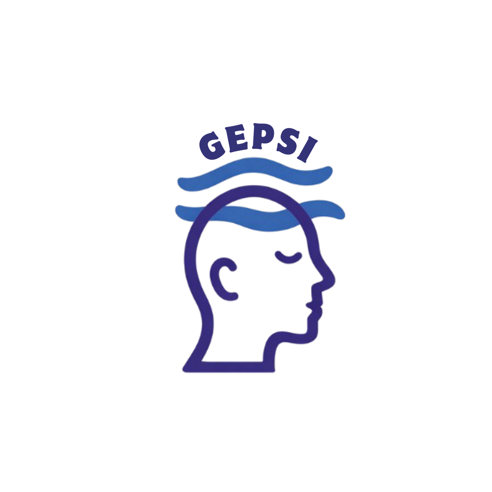

Generando Encuentros Psicosociales Saludables e Integrales
Psicoterapia: La psicoterapia es un espacio seguro y profesional donde acompañamos a las personas a explorar y comprender sus pensamientos, emociones y comportamientos. Nuestro enfoque se basa en la ética, el respeto y la confidencialidad, promoviendo el bienestar y el crecimiento personal en cada sesión.
Nuestros psicólogos ofrecen psicoterapia desde distintas corrientes:
Psicoanalítica: para explorar cómo experiencias pasadas e inconscientes influyen en tu vida actual.
Humanista-experiencial: centrada en conectar con tus emociones y potenciar tu desarrollo personal.
Cognitivo-conductual (segunda y tercera generación): orientada a modificar pensamientos y conductas que generan malestar, incorporando técnicas de aceptación, atención plena y regulación emocional.
GEPSI nace en 2021 con una convicción clara: ofrecer psicoterapia de calidad, cálida en el trato y accesible para la comunidad. Con el tiempo, hemos conformado un equipo diverso, con distintas formaciones teóricas, trayectorias y niveles de experiencia, que incluye diplomados, postítulos, magíster y doctorado, movidos por un interés genuino en la clínica y por la motivación de aportar encuadres y condiciones cuidadas para la psicoterapia.
Creemos profundamente en el cuidado por la clínica, lo que nos impulsa a formarnos de manera continua, a reflexionar sobre nuestra práctica y a seguir aprendiendo, con el propósito de ofrecer procesos terapéuticos cada vez más coherentes con el sentido y ética en psicoterapia. En la actualidad, seguimos construyendo este proyecto en equipo, desde la reflexión clínica, el compromiso y la humanidad.
Conecta con nosotros vía correo: equipo.gepsi@gmail.com o Instagram: @e_gepsi
📍 Arica y Parinacota - Chile 🇨🇱